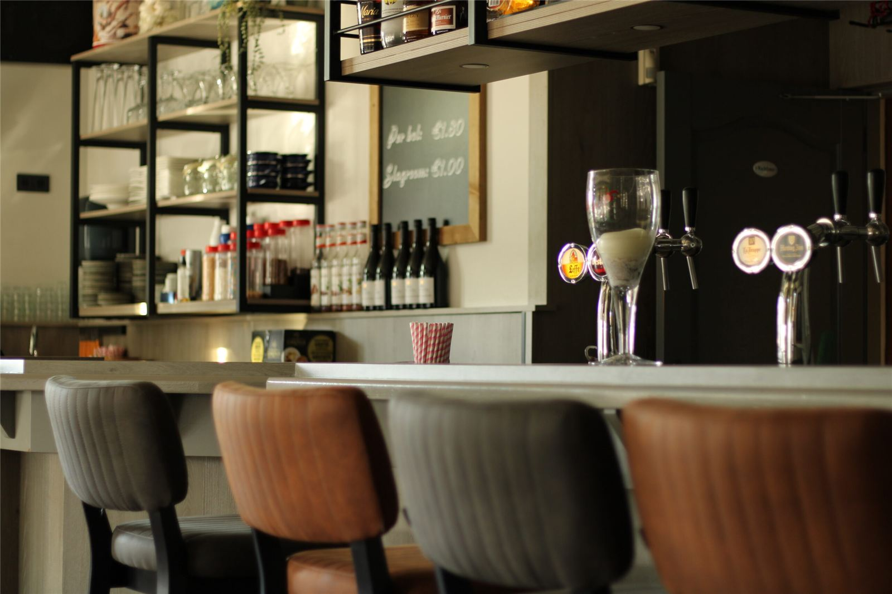
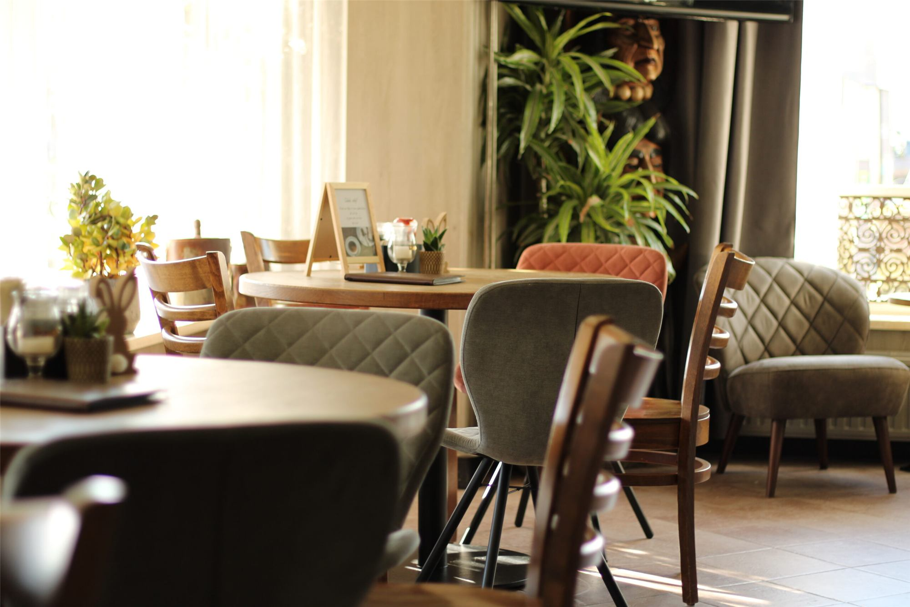
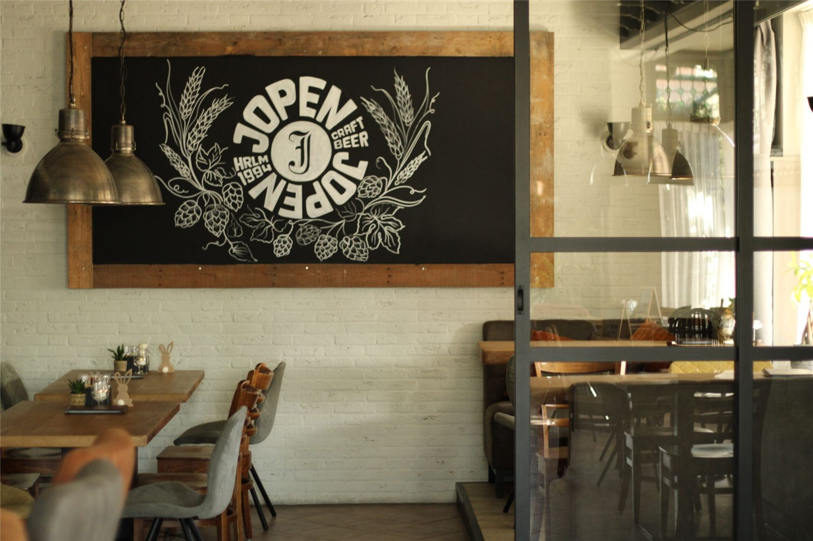
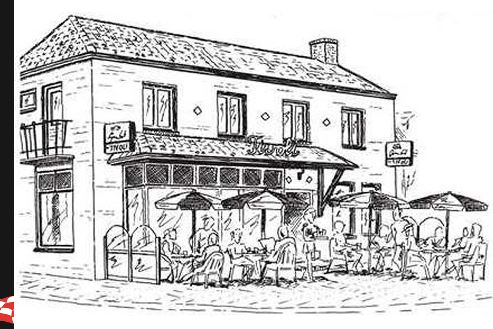

Kerkplein 6, Nispen
CaféTivoli
Lunchcafé, fietscafé, wandelcafé, ons café!
Van harte welkom
Als ik even terugdenk aan hoe het allemaal begon. Nu zo'n 34 jaar geleden toen we samen met familie besloten om het café op het kerkplein uit te baten. Twee jaar later, nadat Twan en ik in het huwelijksbootje waren gestapt, namen we het besluit om voortaan samen de stamgasten van café Tivoli te bedienen.
Tot op vandaag heten Twan en ik samen met ons team u van harte welkom om van een schuimend biertje, koffie met gebak, heerlijke ijsjes of een heerlijke lunch te komen genieten. Och de tijd vliegt snel, zeker als je het naar je zin hebt. Ja ook dankzij u, beste bezoeker, is het voor ons al jaren lang steeds fijn voor u te mogen klaarstaan.
En ik hoop dat ook u bij uw vertrek, net zoals ik zal denken:
"Café Tivoli, I lov it!" Proost!
Hilde


Onze kaart
Van een luxe boterham bij de lunch tot een trappist op het terras. Kies een kaart.
Lunchkaart
Lunch van 11.00 tot 14.00 uur.
Luxe boterhammen
Soep
Tosti's
Salades
Knabbels
Iets lekkers bij de borrel.
Snacks
- Bitterballen
- Frikandellen
- Portie allebei
- Mini loempia's
- Kaasstengels
- Vlammetjes
- Vettig bordje
- Bruine fruitschaal
Bites
- Worstenbroodje
- Kaas plankje
- Hartig plankje
- Nootjes
- Chips zout / paprika
Koffiekaart
Erbij: keuze uit divers gebak. Let op, wij gaan voor vers, dus op = op!
Koffie
- Koffie
- Espresso
- Grote espresso
- Cappuccino
- Latte macchiato
- Koffie verkeerd
Thee
- Biggelaar thee (diverse smaken)
- Verse munt thee
- Gember thee
Warme chocolademelk
Verwen koffie
Koffie special
IJskaart
U kunt bij ons ook terecht voor een hoorntje of cupje met ijs.
Bierkaart
Met het alcoholpercentage per bier. Klik bij een stijl voor de uitleg.
Pils
Wat is pils?
Pils is een licht bier en kenmerkt zich vooral door een heldere goudgele kleur, witte schuimkraag en bittere smaak. Het is niet al te vol en levendig van smaak, maar een lekkere doordrinker. Pils wordt gemaakt van gerstemout (ontkiemd en daarna gedroogde gerst), hop, water en gist en soms suiker. Pils is officieel vernoemd naar de stad Pilsen (Plzeň) in Tsjechië waar dit type bier oorspronkelijk vandaan komt. Pils bevat ongeveer 5% alcohol.
Alcoholvrij/arm
Wat is alcoholvrij bier?
Alcoholvrij bier, in Nederland ook maltbier genoemd, is bier met een extreem laag alcoholpercentage. De meeste alcoholvrije bieren zijn pilsbieren, maar er bestaan ook tarwebieren en ales die alcoholvrij zijn.
Fruitig
Wat is fruitbier?
Fruitbieren hebben een zoete, frisse smaak, waarin het gebruikte vruchtenextract duidelijk herkenbaar is. De bittere hopsmaak of zure smaak is minder sterk dan bij andere bieren. Bij traditionele bieren wordt aan het einde van het brouwproces, vlak voor het gisten, fruit toegevoegd, waarbij de suikers van de vruchten volledig worden vergist. Hier worden steenvruchten, zoals kersen en perziken voor gebruikt, maar ook appels, bananen en aardbeien kunnen worden toegevoegd. De vruchten leveren een subtiele, fruitige, niet zoete bijdrage aan de smaak. De meeste fruitbieren hebben een alcoholpercentage van 2.5-5.5% alcohol.
Amber
Wat is amber bier?
Amber bier is een bier met een hoge gisting. De gisting vindt plaats bij een temperatuur van 15 tot 25 graden Celsius. De naam van het bier slaat op de kleur: het bier is helder en amberkleurig. De kleur komt door de "special B" mout die gebruikt wordt. De special B mout geeft het amberbier een intensere smaak van kruiden of karamel. Het is fris, heeft een aroma van geroosterde mout, en een iets zurige, verfrissende afdronk. Amberbier wordt ook wel Belgische Ale genoemd.
Blond
Wat is blond bier?
Blond bier is een frisse biersoort die voor veel mensen toegankelijk is. Door het gebruik van minder hop, dan bijvoorbeeld bij pils, is de smaak minder bitter. Het alcoholpercentage ligt meestal tussen de 4% en 5%, maar blond bier komt ook voor met wel 8% alcohol. De lichte kleur van blond bier past, net zoals de frisse smaak, helemaal bij het voorjaar en de zomer!
IPA
Wat is IPA?
IPA, voluit Indian Pale Ale, is misschien wel de meest populaire bierstijl van het moment. Flink gehopt, bitter en met typische aroma's van ceder, citrus en tropisch fruit. Het alcoholpercentage ligt tussen 5 en 7.5%. Dit bittere biertype werd voor het eerst gebrouwen in Engeland maar komt inmiddels uit alle hoeken van de wereld.
Glutenvrij
Witbier
Wat is witbier?
Witbier heeft als basis behalve tarwemout ook gerstemout en diverse kruiden. Meestal citrusschillen, koriander en hop. Het smaakt fris en fruitig en bevat een karakteristieke lichtgele kleur. Het is een goede dorstlesser tijdens de zomer. Witbier is een bier van hoge gisting dat het hele jaar door gebrouwen en verkocht wordt. Het wordt niet gefilterd, waardoor het bier enigszins troebel blijft. Het depot bevat gist en dat kan worden gedronken. Witbieren hebben een alcoholpercentage tussen de 5%-6%.
Dubbel
Wat is dubbel?
Dubbel bier is een biersoort waarbij tijdens het brouwproces meer graan wordt toegevoegd. Dit zorgt voor meer suikers en dat heeft weer een hoger alcoholpercentage tot gevolg. De smaak is zoet en weinig bitter. In het kort is dit een zoetig, niet al te bitter bier met een alcoholpercentage van rond de 6%. Je komt smaken van karamel of lichte koffie regelmatig tegen.
Tripel
Wat is tripel?
Tripel is een vrij zware biersoort met een alcoholpercentage tussen 7% en 10%. Door de toevoeging van suiker zijn de smaken zoetig. Deze toevoeging zorgt trouwens ook voor het hoge alcoholpercentage. De kleur van tripel is goudblond en dus lichter dan dubbel en quadrupel bier.
Quadrupel
Wat is quadrupel?
Quadrupel bier is eigenlijk gerstewijn (barley wine). Brouwerij La Trappe heeft in 1991 de naam 'quadrupel' gegeven aan hun gerstewijn. Quadrupel is een stevige biersoort met een hoog alcoholpercentage van rond de 10%. De hopbitterheid is laag tot gemiddeld en je proeft vooral moutige smaken in dit donkere bier.
Trappist
Wat is een trappist?
Alle trappistenbieren zijn abdijbieren, maar niet elk abdijbier is een trappist. Een trappistenbier is herkenbaar aan het logo 'Authentic Trappist Product' en mag alleen de naam Trappist dragen als het bier wordt gebrouwen in een trappistenklooster, onder het toezicht en de verantwoordelijkheid van monniken, behorende tot de orde der cisterciënzers. Daar komt nog bij dat de opbrengsten moeten gaan naar het levensonderhoud van de kloosterlingen, het opknappen van de abdij en het steunen van goede doelen.
Frisdranken
Voor onderweg of op het terras.
- Chaudfontaine blauw
- Chaudfontaine rood
- Coca-Cola
- Coca-Cola Zero
- Fanta Orange
- Fanta Cassis
- Sprite
- Tonic
- Bitter Lemon
- Ginger Ale
- Fuze Tea
- Fuze Tea Green
- Appelsap
- Sinaasappelsap
- Chocomelk
- Fristi
Wijnkaart
Wit, rosé en rood.
Wit
Rosé
Rood
Gedistilleerd
Van jonge jenever tot cognac.
- Ketel jonge jenever
- Schrobbeler
- Jägermeister
- Vieux
- Zwarte Kip advocaat
- Dropshot
- Cointreau
- Licor 43
- Baileys
- Whiskey Famous Grouse
- Whisky Johnnie Walker
- Grand Marnier
- Coebergh bessen
- Pernod
- Cognac Joseph Guy
- Bacardi
- Pink Gin
- Amaretto
- Gordon's Gin

Fietsers en wandelaars zijn van harte welkom!
Wat maakt een fietstocht leuk? Natuurlijk, het afstappen! Ons café en terras zijn een favoriete pleisterplaats voor wandelaars en fietsers in dit mooie gebied. Na zo'n prachtige tocht is niets lekkerder dan een koud biertje of een verfrissende ijscoupe op ons zonnig terras. Ook in ons café is het prettig vertoeven met een kopje koffie en appeltaart of een heerlijk stukje gebak van de dag. Of plan uw route zo dat u bij ons uw lunchpauze heeft.
- Gratis de elektrische fiets opladen
- De bidon vullen met water
- Bij pech de band plakken
- Gratis parkeren achter de kerk
Wandelen of fietsen in en rond Nispen
De landelijke omgeving van Nispen biedt volop mogelijkheden voor wandel- en fietstochten. Nispen is een goed startpunt voor tochten richting de bossen van Wouwse Plantage, de Kalmthoutse Heide of de Rucphense bossen. Veel routes in de regio passeren ons dorp. De dorpsrand biedt goede mogelijkheden om "ommetjes" te maken, en ook in natuurgebied Visdonk, tussen Nispen, Roosendaal en Schijf, kunt u leuke wandelingen maken. Het fietspad langs de Molenbeek voert u al kronkelend via natuurgebied Het Everland richting Roosendaal.
Bij ons vindt u diverse fiets- en wandelroutes: kom gezellig een keertje langs om te kijken of er iets tussen zit voor u. Komt u met de auto? Dan parkeert u gratis achter de kerk, vlakbij waar de verschillende wandel- en fietsroutes starten.
VVV-infopunt
U kunt bij ons terecht voor info over Nispen en omgeving. In onze displays vindt u verschillende gratis folders en krantjes. En uiteraard staan wij altijd voor u klaar om te helpen, bijvoorbeeld bij het zoeken naar een slaapplek.
Wij staan als fiets- en wandelcafé vermeld op onder meer wandelnet.nl en fietsoplaadpunten.nl.
Zien en doen in Nispen
Aan de slag als horeca topper in de tofste zaak van Nispen?
Wij zijn op zoek naar toppers in de bediening. Je zult voornamelijk bezig zijn met het verwelkomen en bedienen van onze gasten. Heb jij last van een stilzit allergie? Dan ben je mogelijk de ideale topper.
Pssst. Je moet WEL bij ons komen werken wanneer je het leuk vindt om in teamverband in een energieke omgeving te werken en je een sterke drive hebt om het gasten naar de zin te maken. Je moet NIET bij ons komen werken wanneer je houdt van rustig, voorspelbaar werk en je snel overprikkeld bent.
Functie eisen
- Ervaring is meegenomen maar zeker geen must
- Je bent communicatief sterk en niet vies van een praatje
- Je hebt een representatieve uitstraling
- Je werkt graag in een team
- Je presteert goed onder druk
- Je bent flexibel
Wat bieden wij jou
- Een baan waar elke dag anders kan zijn
- Een marktconform salaris met leuk extraatje
- Een werkomgeving met gezelligheid en leuke collega's
- Flexibiliteit waardoor het goed te combineren valt met studie en/of privé
Spreekt dit alles je enorm aan? Kom dan een gesprekje doen met ons en wellicht word jij onze nieuwe medewerker. Twan en Hilde
Reageer via e-mailHuisregels
- Wanneer u telefoon krijgt of een filmpje wil bekijken vragen wij u dit gewoon aan uw oor of met oortjes te doen, zodat niet iedereen hoeft te horen hoe het met de aambeien van de buurman gaat.
- Honden zijn bij ons zeker welkom, maar onze viervoetige vrienden horen wel op de grond en niet op een stoel.
Tot op het Kerkplein
| Maandag | vanaf 13.00 uur |
| Dinsdag | gesloten |
| Woensdag | gesloten |
| Donderdag | vanaf 11.00 uur |
| Vrijdag | vanaf 11.00 uur |
| Zaterdag | vanaf 11.00 uur |
| Zondag | vanaf 10.00 uur |
Let op: van 1 oktober tot 1 april zijn wij ook op maandag gesloten.
Een vraag of gewoon voor de gezelligheid? Vul het formulier in, dan doen we ons best om u zo goed mogelijk van dienst te zijn.